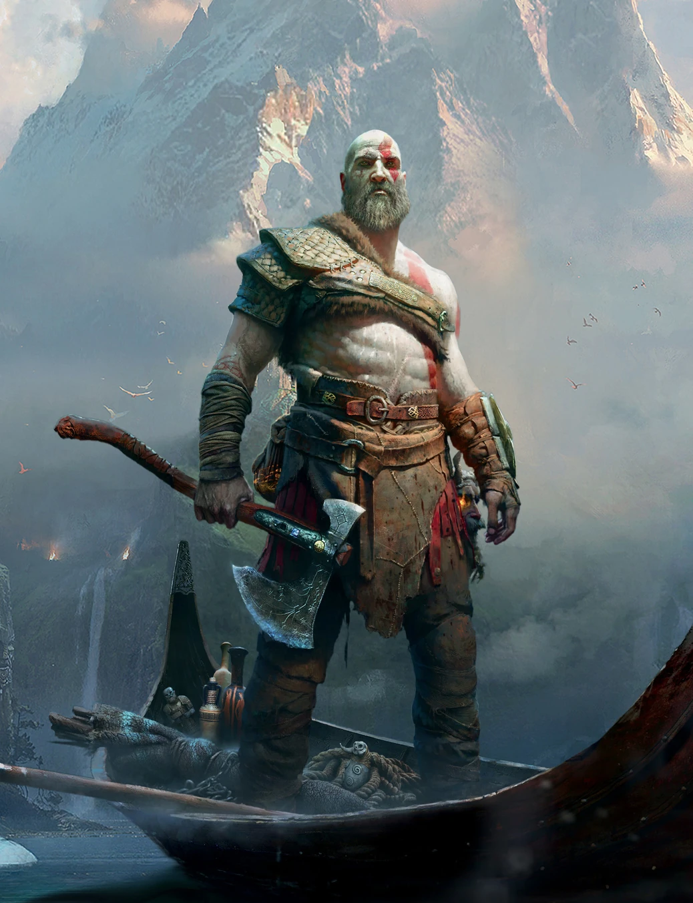
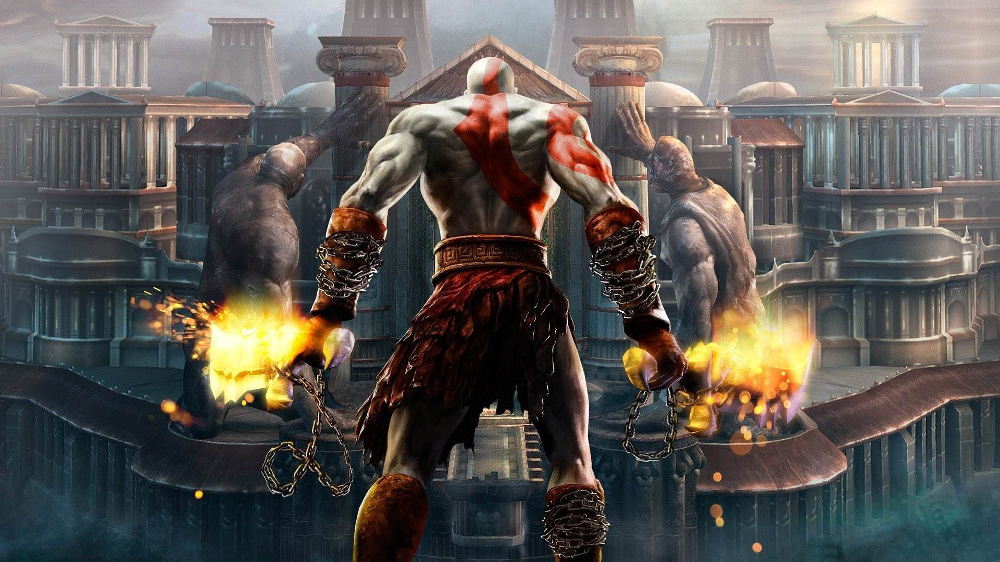
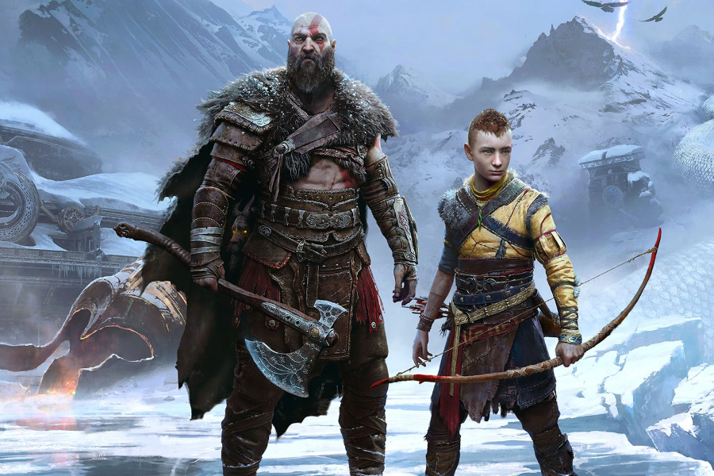
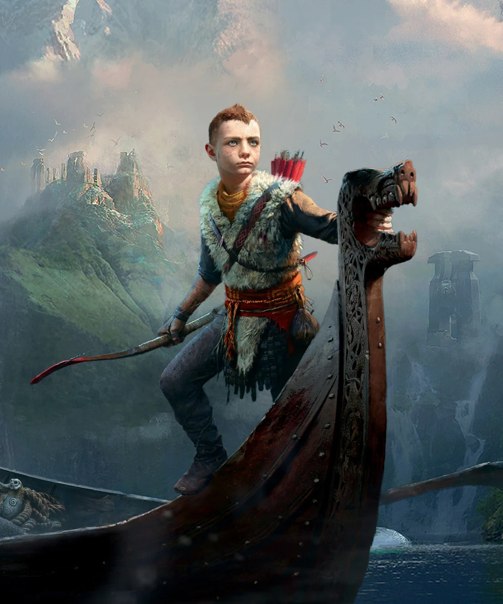
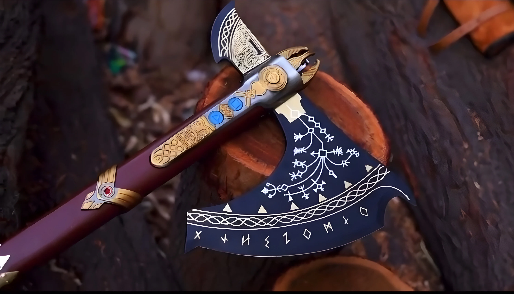
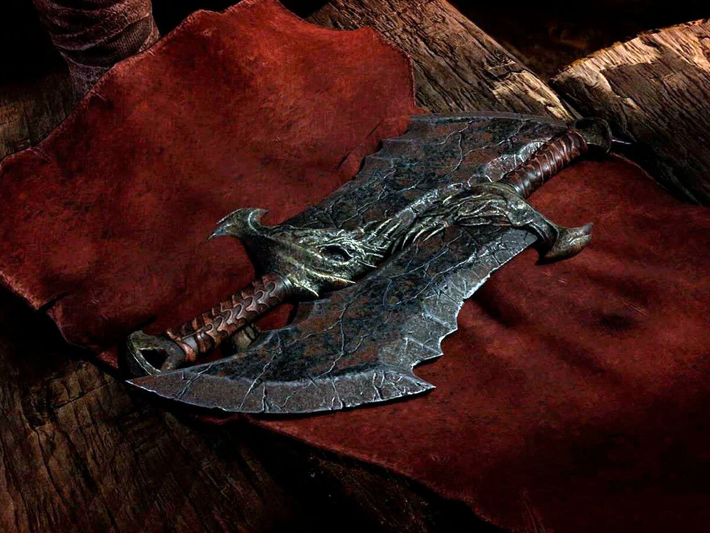
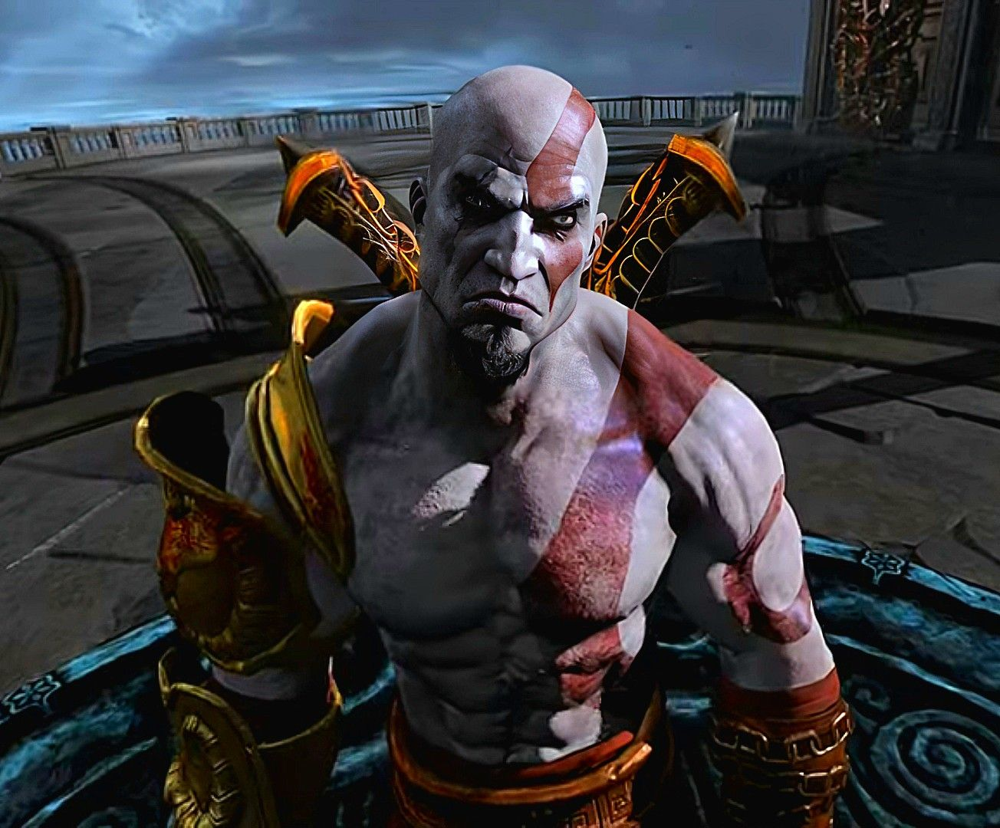

01
KRATOS
Un guerrero espartano que carga con las consecuencias de sus decisiones y de su pasado.

EL FANTASMA DE ESPARTA
Un guerrero marcado por su pasado. Un dios que intenta cambiar su destino.
CONOCÉ SU HISTORIA
EL PASADO
La guerra, la pérdida y la venganza definieron sus primeros años.

UN NUEVO CAMINO
En tierras nórdicas, deberá aprender a ser algo más que un guerrero.
PERSONAJES Y ELEMENTOS
Personajes y objetos que acompañan al Fantasma de Esparta en su recorrido.

Un guerrero espartano que carga con las consecuencias de sus decisiones y de su pasado.

El hijo de Kratos. Su vínculo con él será fundamental para construir un futuro diferente.

Un arma de gran poder que acompaña a Kratos durante su aventura en los reinos nórdicos.

Las armas encadenadas que representan una parte dolorosa de su historia.
CONOCÉ MÁS

DE ESPARTA A LOS NUEVE REINOS
LA HISTORIA DEL GUERRERO
Kratos fue un guerrero espartano cuya vida estuvo marcada por la guerra. En busca de poder para vencer a sus enemigos, realizó un pacto con Ares, el dios griego de la guerra. A cambio de su fuerza, puso su destino en manos de una divinidad que terminaría cambiando su vida para siempre.
Engañado por Ares, Kratos perdió a su esposa y a su hija. Las cenizas de ambas quedaron adheridas a su piel, convirtiéndola en un tono pálido. Desde entonces, el guerrero fue conocido como el Fantasma de Esparta, un nombre que representa el dolor y la culpa que lo acompañaron.
Consumido por la ira, Kratos emprendió un camino de venganza contra Ares y los dioses del Olimpo. Su enfrentamiento con el dios de la guerra lo llevó a ocupar su lugar, pero alcanzar ese poder no consiguió darle la paz que tanto necesitaba.
Con el paso del tiempo, su conflicto con los dioses griegos se volvió cada vez más profundo. Kratos se enfrentó a distintas figuras de la mitología y sus acciones provocaron la caída del orden del Olimpo. Sin embargo, la venganza no logró borrar los recuerdos de su pasado.
Muchos años después, Kratos llegó a las tierras nórdicas e intentó alejarse de la violencia que había definido su existencia. Allí formó una nueva familia junto a Faye y tuvo un hijo llamado Atreus. Tras la muerte de Faye, padre e hijo comenzaron un viaje para cumplir su último deseo: esparcir sus cenizas desde el punto más alto de los reinos.
Durante ese recorrido, Kratos tuvo que enfrentarse a nuevos enemigos y también a sus propios recuerdos. Su mayor desafío fue aprender a guiar a Atreus sin repetir los errores que habían marcado su vida. Así, su historia dejó de ser solamente una búsqueda de venganza y se convirtió en una lucha por cambiar el destino y construir un futuro diferente.
UNA MIRADA AL JUEGO
Un recorrido audiovisual por el universo de Kratos.
DEJANOS TU OPINIÓN
¿Cuál es tu etapa favorita de Kratos? Compartí tu opinión, contanos qué personaje te interesa o dejá tu comentario.